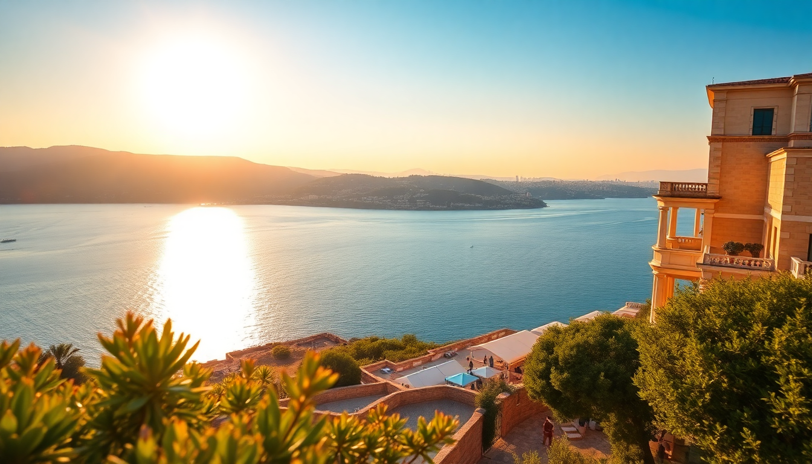

Where to Stay in Athens: Best Neighborhoods for First-Timers

I landed in Athens on a Sunday afternoon with a backpack and no plan. After four trips and a total of six weeks spent bouncing between the Acropolis and the coast, I’ve learned that where you sleep makes or breaks the trip. This guide covers the seven neighborhoods I’ve actually stayed in or spent serious time in, with the pros, cons, and specific places to book.
Which neighborhood is best for first-time visitors?
Plaka is the obvious answer, and for good reason. It sits right under the Acropolis, with narrow marble streets, bougainvillea-covered walls, and more souvenir shops than you’ll ever need. You can walk to the Acropolis Museum in five minutes and to Monastiraki Square in ten.
I stayed at Adrian Hotel on Adrianou Street. The rooms are basic but clean, and the rooftop terrace has a direct view of the Parthenon lit up at night. Downside: Plaka is packed with tourists from 9 AM to midnight. If you want quiet after dark, look elsewhere.
- Adrian Hotel — rooftop view of the Parthenon, mid-range price
- Athens Was — design hotel with a pool, on the edge of Plaka
- Electra Palace Athens — five-star with a rooftop pool, great for families
Is Syntagma Square too touristy?
Yes, but it’s also the most practical base. Syntagma is where the metro, tram, and airport bus all meet. You can be at the airport in 40 minutes or at the port in 20. The Grande Bretagne is the historic luxury option — I had a drink at their rooftop bar once, and the view of the Acropolis is the best in the city.
For mid-range, Hotel Plaka (despite the name) is actually on Syntagma Square. The rooms are small but soundproofed. If you’re on a budget, Athens Center Square Hotel is a block away and includes a decent breakfast.
- Grande Bretagne — old-school luxury, rooftop bar
- Hotel Plaka — solid mid-range, quiet rooms
- Athens Center Square Hotel — budget-friendly, good breakfast
What about Koukaki for a local vibe?
Koukaki is my personal favorite. It’s a residential neighborhood south of the Acropolis, full of small cafes, independent bakeries, and zero chain stores. You can walk to the Acropolis Museum in 15 minutes, but you’ll feel like you’re living in Athens, not visiting it.
I rented an Airbnb on Falirou Street, but there are good hotels too. The Athens Gate Hotel sits right on the edge of Koukaki and has rooms with direct Acropolis views. Athens Studios is a no-frills apartment-style place that worked well for a week-long stay.
- The Athens Gate Hotel — Acropolis view rooms, rooftop restaurant
- Athens Studios — self-catering, good for longer stays
- Koukaki neighborhood — cafes like Mama Roux and bakeries at Kostas
Is Psiri worth the noise?
If you want nightlife, yes. Psiri is the hipster heart of Athens — graffiti-covered walls, underground bars, and live music spilling onto the streets until 3 AM. I stayed at Athens Zafolia Hotel on the quieter edge of Psiri, and even then I could hear bass from Six d.o.g.s. until late.
During the day, Psiri is great for food. Ta Karamanlidika tou Fani serves cured meats and cheese plates that are better than any fancy restaurant. Oineas is a wine bar with a courtyard that feels hidden from the city. Just don’t expect to sleep early.
- Athens Zafolia Hotel — quiet edge of Psiri, rooftop bar
- Six d.o.g.s. — bar and courtyard, loud at night
- Ta Karamanlidika tou Fani — deli-style lunch, affordable
Should I stay in Monastiraki for the flea market?
Monastiraki is chaotic in the best way. The flea market runs through Ifestou Street every day, with antiques, vinyl records, and random junk. The Monastiraki Metro Station is a major hub, so you can get anywhere fast.
I stayed at Attalos Hotel — it’s old, the rooms are tiny, but the rooftop bar is legendary. You can see the Acropolis, Lycabettus Hill, and the sea all at once. For something nicer, A for Athens has a rooftop bar that’s always packed. The rooms are modern but small.
- Attalos Hotel — budget, classic rooftop view
- A for Athens — stylish rooms, popular bar
- Monastiraki Flea Market — Sundays are busiest, haggle hard
Is Kolonaki worth the splurge?
Kolonaki is the upscale neighborhood at the base of Lycabettus Hill. It’s full of designer boutiques, high-end restaurants, and embassy buildings. If you want quiet, clean streets and a more polished feel, this is it.
I didn’t stay here myself — too pricey — but I had coffee at Da Capo and dinner at Oikonomou, both excellent. St George Lycabettus is the landmark hotel, with a pool and a view that rivals the Grande Bretagne. Perianth Hotel is a boutique option with a rooftop bar that’s less crowded than the big hotels.
- St George Lycabettus — luxury, pool, panoramic view
- Perianth Hotel — boutique, Art Deco style
- Da Capo — coffee and people-watching
What about staying near the port in Piraeus?
Only if you’re catching a ferry. Piraeus is a working port city, not a vacation spot. The streets are gritty, and the main square feels like a transit hub. I stayed at Hotel Piraeus Port one night before a ferry to Crete — it’s functional, clean, and a three-minute walk from the gate.
For a nicer option, The Alex Monte is a short taxi ride from the port and has a rooftop pool. But honestly, if your ferry leaves early, just book a cheap room near the gate and save your energy for the islands.
- Hotel Piraeus Port — basic, closest to ferries
- The Alex Monte — nicer, requires taxi
- Piraeus — only stay here for ferry connections
FAQ
Is it safe to walk around Athens at night? Yes, in most central neighborhoods. Plaka, Syntagma, Koukaki, and Kolonaki are well-lit and have people out until late. Psiri and Monastiraki are safe but rowdy — watch your phone in crowds. Avoid Omonia Square after dark; it’s sketchy even during the day.
Which neighborhood has the best food without tourist prices? Koukaki. Walk down Falirou Street and you’ll find tavernas like Mani Mani (modern Greek) and Kriti (Cretan cuisine) where locals eat. Plaka restaurants charge double for the same dish.
How do I get from the airport to my hotel? Take the metro (Line 3) from Athens Airport to Syntagma or Monastiraki — it’s 9 euros and runs every 30 minutes. Taxis are a flat 40 euros to central Athens. Avoid the bus unless you’re on a tight budget; it takes twice as long.
Conclusion
- Plaka is best for first-timers who want to be in the middle of everything.
- Koukaki is my pick for a local, quieter stay with great food.
- Syntagma is the most practical base for transport connections.
- Psiri is for night owls who don’t mind noise.
- Kolonaki is worth it if you want luxury and calm.
- Piraeus is only for ferry connections, not sightseeing.